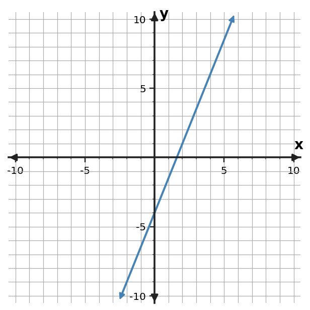
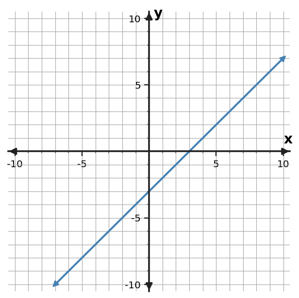
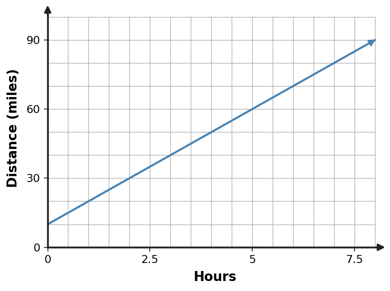
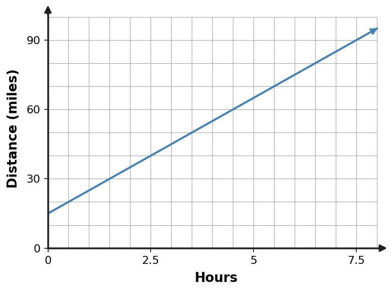
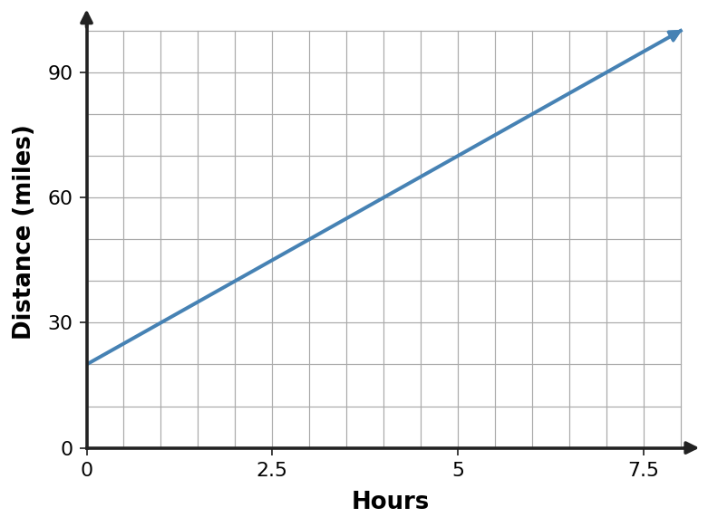

1. Graph $y=\frac{3}{2}x+2$. Mark the $y$-intercept and at least one additional point that shows the slope.
Algebra Practice 2.2 :::: Set 3
2. Graph $y=2x-5$. Mark the $y$-intercept and at least one additional point that shows the slope.
3. Graph $y=-\frac{3}{2}x-2$. Mark the $y$-intercept and at least one additional point that shows the slope.
4. Use the graph to identify the $y$-intercept and describe whether the function is increasing or decreasing.

5. Use the graph to identify the $y$-intercept and describe whether the function is increasing or decreasing.

6. Use the graph to identify the $y$-intercept and describe whether the function is increasing or decreasing.

7. Plot the ordered pairs from the table and draw the linear function through them. Then state its slope and $y$-intercept.
| $x$ | $y$ |
|---|---|
| $-2$ | $-6$ |
| $0$ | $-4$ |
| $2$ | $-2$ |
| $4$ | $0$ |
8. Plot the ordered pairs from the table and draw the linear function through them. Then state its slope and $y$-intercept.
| $x$ | $y$ |
|---|---|
| $-2$ | $10$ |
| $0$ | $6$ |
| $2$ | $2$ |
| $4$ | $-2$ |
9. Plot the ordered pairs from the table and draw the linear function through them. Then state its slope and $y$-intercept.
| $x$ | $y$ |
|---|---|
| $-2$ | $2$ |
| $0$ | $3$ |
| $2$ | $4$ |
| $4$ | $5$ |
10. A parking garage charges 6 dollars to enter plus 3 dollars per hour. Sketch a graph with hours on the horizontal axis and total cost on the vertical axis. Identify what the intercept means.
11. A candle is 24 centimeters tall and burns down 2 centimeters each hour. Sketch a graph with hours on the horizontal axis and candle height on the vertical axis. Identify what the intercept means.
12. A phone plan starts with a 15-dollar fee plus 5 dollars per gigabyte. Sketch a graph with gigabytes on the horizontal axis and total cost on the vertical axis. Identify what the intercept means.
13. Read the trip graph to estimate the distance at 8 hours. The requested time is inside the displayed 0-to-8-hour window.

14. Read the trip graph to estimate the distance at 2.5 hours. The requested time is inside the displayed 0-to-8-hour window.

15. Read the trip graph to estimate the distance at 6.5 hours. The requested time is inside the displayed 0-to-8-hour window.

16. The equation is $y=3x-5$. A student plots $(0,3)$ as the intercept. Identify the error and correct it.
17. The equation is $y=-\frac{1}{2}x+6$. A student moves right 1 and down 2 from the intercept. Identify the error and correct it.
18. On a graph, each horizontal grid step is 4 units and each vertical grid step is 2 units. A student moves right 1 square and up 1 square and calls the slope 1. Correct the slope.
19. For $y=4x-1$, create a three-row input-output table for $x=0,1,2$.
20. For $y=-2x+5$, create a three-row input-output table for $x=0,1,2$.
21. For $y=3x+2$, create a three-row input-output table for $x=0,1,2$.
22. Plot the point $(4,3)$ on a coordinate plane and identify its quadrant.
23. Plot the point $(-5,2)$ on a coordinate plane and identify its quadrant.
24. Plot the point $(-4,-7)$ on a coordinate plane and identify its quadrant.